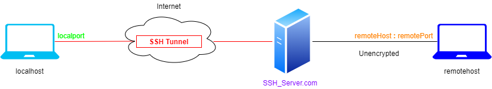

Secure Shell (SSH)
Secure Shell or
SSH is a network protocol (replacement for
Telnet) that allows data to be exchanged using a secure channel between two networked devices.
SSH allows a client to remote access through a secure shell to a SSH server that for default listen on port 22
SSH tunnel
SSH tunnels are created through an SSH protocol connection and may be used to tunnel unencrypted traffic over a network through an encrypted channel.
SSH allows to tunnel any protocol within an encrypted channel
ssh –L localport:remotehost:remoteport username@SSHserver.comexample: ssh –L 4000:homepc:22 daniele@sshserver.com